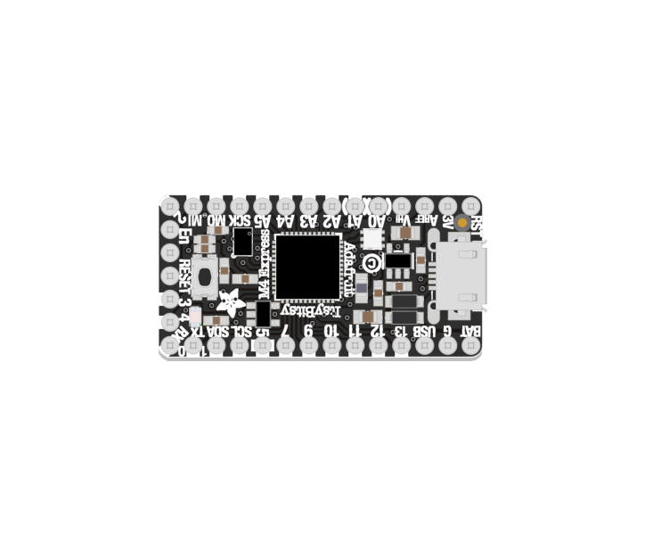

The central component at the heart of your projects. It runs code, reads and processes sensor data, and controls outputs (lights, motors, speakers, etc.)
The ItsyBitsy M4 Express is a powerful and versatile development board powered by a 32-bit Cortex M4 microcontroller.
For detailed information on the ItsyBitsy M4 Express, refer to Adafruit’s documentation:
This includes information on how to re-install or update CircuitPython, as well as how to switch between Arduino and CircuitPython modes.